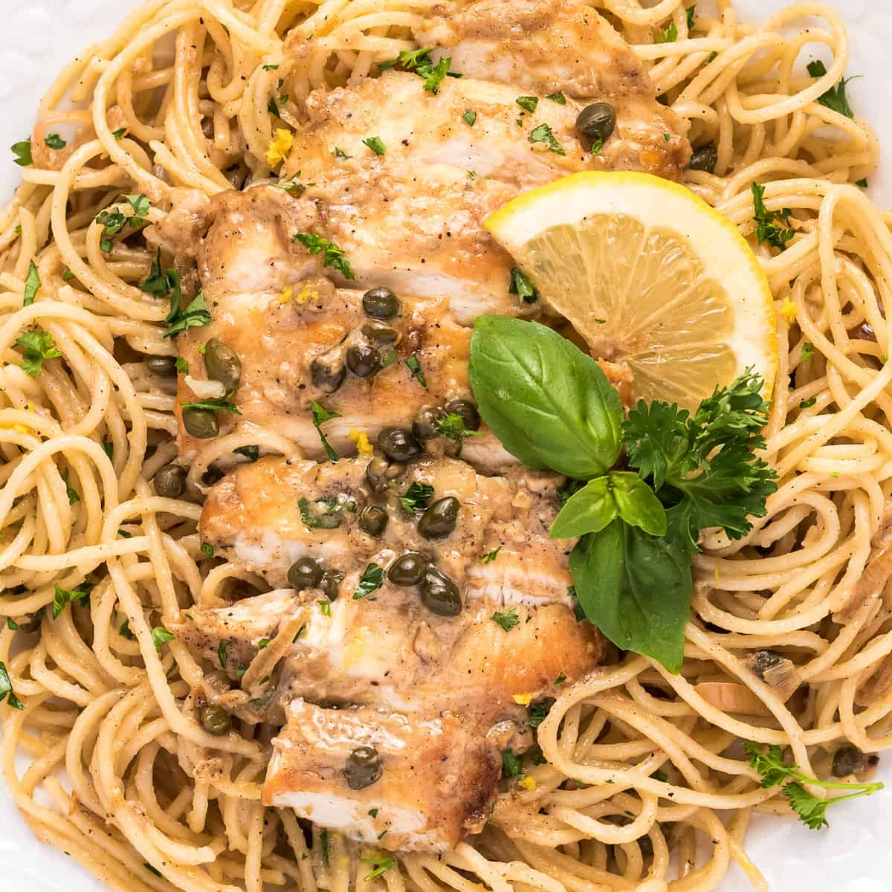

Chicken Piccata

Description
This is my favorite italian dish, with lemons and capers this is a very tangy and flavorful dish. Very easy to prepare, but make sure you have high quality olive oil, the chicken will be best when fried in good oil. Served with angel hair pasta, this is the perfect comfort food for people who enjoy tart flavors.
Ingredients
- Two boneless, skinless chickent breasts
- Three tablespoons olive oil
- Half a cup of good white wine
- Third of a cup of freshly squeezed lemon juice
- Half a cup of chicken stock
- One quarter cup of rinsed capers
- Cornstarch for thickening, optional
- Half a pound of cooked angel hair pasta
- Salt and pepper to season the meat
Directions
- Butterfly each chicken breast and then pound flat with a meat mallet. Season with salt and pepper. Final thickness should be a half-inch or less.
- Heat olive oil in a large skillet over medium heat
- Add chicken to pan, one breast at a time, and cook until cooked through, turning occasionally
- Remove chicken from pan and set aside
- Deglaze pan with white wine, then add lemon juice and chicken stock
- Allow sauce to heat through, and then add capers
- If sauce is thin, create a cornstarch slurry with one tablespoon cornstarch and two tablespoons of water. Add to sauce slowly and whisk constantly while adding to avoid lumps
- Add chicken back to pan to reheat and coat in sauce, if desired
- Serve chicken over cooked pasta with sauce